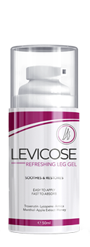
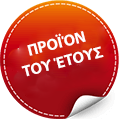
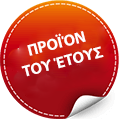
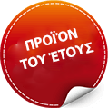

Συνεργικό αποτέλεσμα: τζελ
Levicose
ΝΑΝΟ-ΤΕΧΝΟΛΟΓΙΕΣ
ΣΕ ΕΠΙΦΥΛΑΚΗ ΤΗΣ ΥΓΕΙΑΣ ΚΑΙ ΟΜΟΡΦΙΑΣ
ΤΩΝ ΦΛΕΒΩΝ
- Σε 89% ενισχύει την αποκατάσταση των ιστών των κατεστραμμένων αγγείων
- Η θεραπεία και την υποστήριξη σε μικροκυττάρικο επίπεδο
- Ανακουφίζει από οποιοδήποτε στάδιο των κιρσών για 30 ημέρες!
- Σταματάει τον πόνο με 1 την εφαρμογή
 

